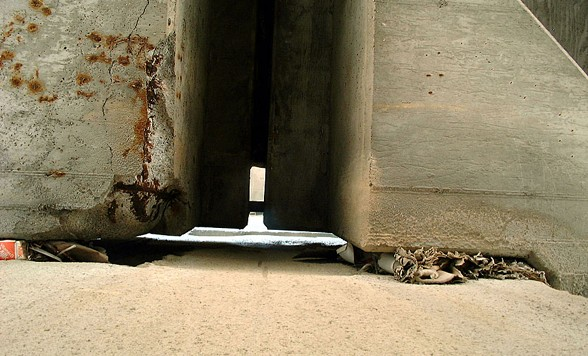
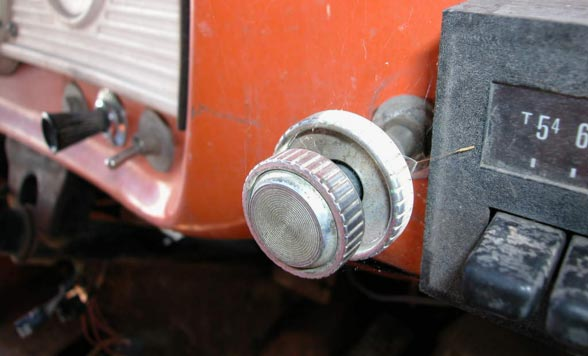

After the safari / four contestants
The photographs.
Four photographers, ten pictures each. Choose a photographer, then an image.

Urban Photo Safari / 2002.1Eric Diebold
Photograph 1 of 10
After the voting / 2002.1
The results.
Tyler Galloway won the Safari. Explore the winning image and the final vote tally.

Winning image
Tyler GallowayPhotograph 8 received three votes. Take a closer look at the winning image.
See it in Tyler’s gallery ↗| Contestant | 1 | 2 | 3 | 4 | 5 | 6 | 7 | 8 | 9 | 10 |
|---|